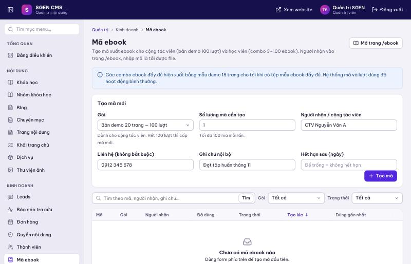
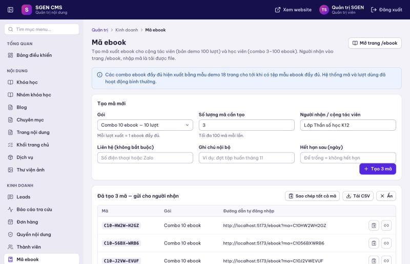
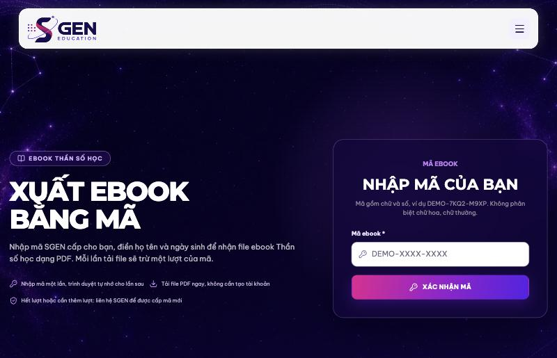
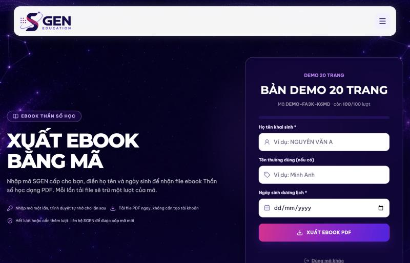
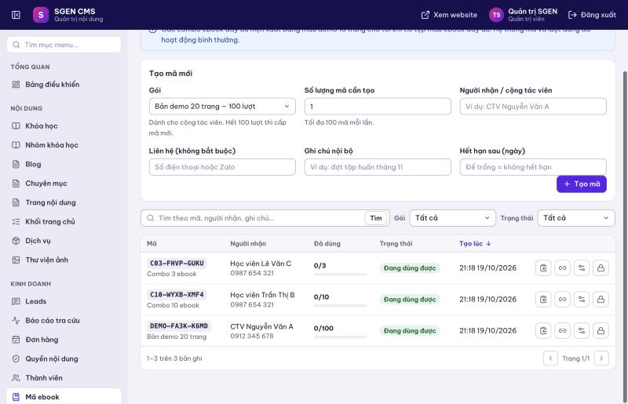
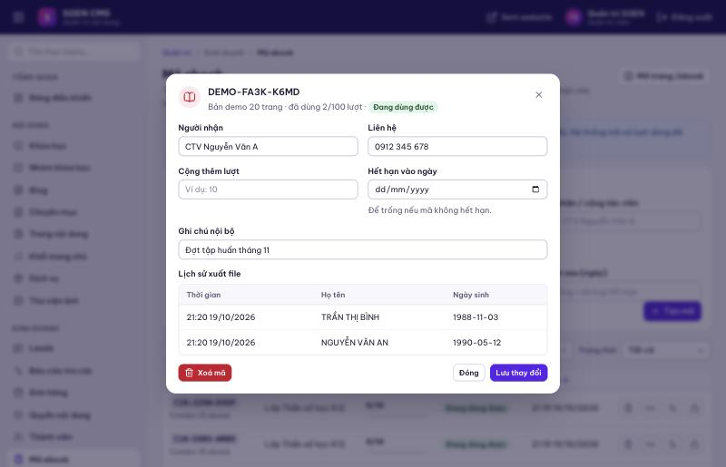

SGEN Education · thansohuongnghiep.com · cập nhật 19/10/2026
Mỗi mã ebook cho phép người nhận tự xuất file ebook Thần số học dạng PDF mà không cần tạo tài khoản. Người nhận chỉ cần nhập mã (hoặc bấm đường dẫn có sẵn mã), điền họ tên và ngày sinh rồi tải file. Mỗi lần tải file trừ 1 lượt của mã.
| Gói | Số lượt / mã | Dùng cho |
|---|---|---|
| Bản demo 20 trang | 100 | Cộng tác viên: tự đăng nhập bằng mã và xuất ebook demo cho khách. Hết 100 lượt thì cấp mã mới. |
| Combo 3 / 5 / 10 / 30 / 50 / 100 ebook | 3 / 5 / 10 / 30 / 50 / 100 | Học viên: xuất ebook đầy đủ, mỗi lượt là 1 ebook. |
thansohuongnghiep.com/admin, vào menu Kinh doanh → Mã ebook.
Ngay sau khi tạo, hệ thống hiện bảng các mã vừa tạo. Bấm biểu tượng sao chép để lấy mã hoặc đường dẫn tự đăng nhập. Nếu tạo nhiều mã, dùng Sao chép tất cả mã hoặc Tải CSV (mở được bằng Excel) để gửi lần lượt cho từng người.

Có hai cách gửi cho người nhận:
thansohuongnghiep.com/ebook, nhập mã rồi bấm Xác nhận mã. Mã không phân biệt chữ hoa, chữ thường và không cần gõ dấu gạch.…/ebook?ma=MÃ): người nhận bấm vào là vào thẳng trang xuất ebook, không cần nhập mã. Trình duyệt nhớ mã nên lần sau mở lại /ebook vẫn dùng tiếp được.

Danh sách mã hiển thị mã, người nhận, số lượt đã dùng, trạng thái và ngày tạo. Có thể tìm theo mã, tên người nhận, ghi chú, và lọc theo gói hoặc trạng thái.

| Nút trên mỗi dòng | Công dụng |
|---|---|
| Sao chép mã | Lấy mã để gửi cho người nhận. |
| Sao chép đường dẫn | Lấy đường dẫn tự đăng nhập. |
| Chi tiết | Sửa thông tin, cộng thêm lượt, đặt ngày hết hạn, xem lịch sử xuất file, xoá mã. |
| Khoá / Mở lại | Tạm dừng một mã mà không mất dữ liệu. Mã bị khoá không dùng được cho tới khi mở lại. |

| Trạng thái | Ý nghĩa |
|---|---|
| Đang dùng được | Còn lượt, chưa hết hạn, chưa bị khoá. |
| Hết lượt | Đã dùng hết số lượt. Cấp mã mới hoặc cộng thêm lượt ở mục Chi tiết. |
| Hết hạn | Quá ngày hết hạn đã đặt. |
| Đã khoá | Quản trị viên đã khoá mã. |
Nhờ họ kiểm tra lại từng ký tự (không phân biệt hoa thường). Bạn có thể tìm mã trong danh sách để đối chiếu, hoặc gửi lại đường dẫn tự đăng nhập.
Mở mã trong danh sách, xem lịch sử xuất file để đối chiếu. Cần thêm lượt thì dùng Chi tiết → Cộng thêm lượt, hoặc cấp mã mới.
Bấm Chi tiết ở dòng mã của họ: lịch sử liệt kê họ tên, ngày sinh và thời gian của từng lượt xuất.